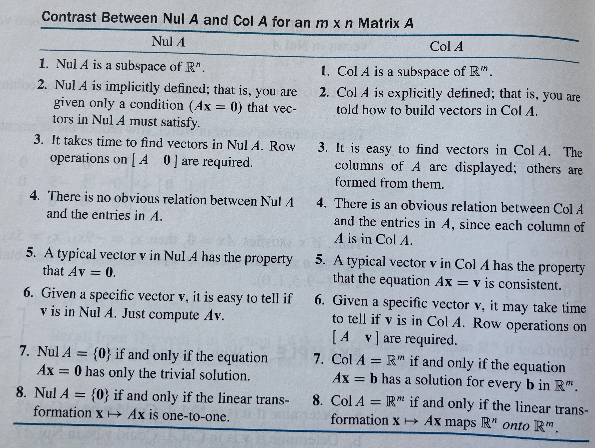

15 Vector Spaces and Subspaces
Recall the definition of a subspace:
A subspace \(\mathcal{H}\) of a vector space \(\mathcal{V}\) is a subset of \(\mathcal{V}\) such that
\(\mathcal{H}\) contains the zero vector – \(\mathbf{0} \in \mathcal{H}\)
\(\mathcal{H}\) is closed under vector addition. Therefore, for \(\mathbf{u}\) and \(\mathbf{v}\) in \(\mathcal{H}\), the sum \(\mathbf{u} + \mathbf{v}\) is in \(\mathcal{H}\)
\(\mathcal{H}\) is closed under scalar multiplication. Therefore, for \(\mathbf{u}\) in \(\mathcal{H}\) and a scalar \(a\), the product \(a \mathbf{u}\) is in \(\mathcal{H}\)
A consequence of this definition is that a subspace \(\mathcal{H}\) is closed under linear combinations.
15.1 Null space and column space
Also, recall the special subspaces of the column space and the null space.
15.1.1 Null space
The null space null(\(\mathbf{A}\)) of an \(m \times n\) \(\mathbf{A}\) is the set of all solutions of the homogeneous equation \(\mathbf{A} \mathbf{x} = \mathbf{0}\)
Another way to write null(\(\mathbf{A}\)) is
\[ \begin{aligned} \mbox{null}(\mathbf{A}) = \{\mathbf{x} : \mathbf{x} \in \mathcal{R}^n \mbox{ and } \mathbf{A} \mathbf{x} = \mathbf{0} \} \end{aligned} \]
Theorem 15.1 The null space of an \(m \times n\) matrix \(\mathbf{A}\) is a subspace of \(\mathcal{R}^n\).
As a consequence, there will exist a set of vectors that span the null space null(\(\mathbf{A}\)). However, the null space of \(\mathbf{A}\) is defined implicitly. This means that the null space of \(\mathbf{A}\) is not obvious given the vectors of \(\mathbf{A}\) and must be checked/calculated.
- Example 15.1
- In class
Find a spanning set for null(\(\mathbf{A}\)) where
\[ \begin{aligned} \mathbf{A} = \begin{pmatrix} 7 & -2 & 7 & -4 & 5 \\ 2 & 0 & 3 & 3 & 9 \\ -5 & 2 & -5 & 7 & -2 \end{pmatrix} \end{aligned} \]
- Find solution to system of homogeneous system of equations \(\mathbf{A} \mathbf{x} = \mathbf{0}\)
A <- matrix(c(7, 2, -5, -2, 0, 2, 7, 3, -5, -4, 3, 7, 5, 9, -2), 3, 5)
rref(cbind(A, 0)) [,1] [,2] [,3] [,4] [,5] [,6]
[1,] 1 0 0 1.50 -4.50 0
[2,] 0 1 0 7.25 2.75 0
[3,] 0 0 1 0.00 6.00 0Take the general solution and write as a linear combination of vectors where the coefficients are the free variables.
general solution \(x_1 = -1.5 x_4 + 4.5 x_5\), \(x_2 = -7.25 x_4 - 2.75 x_5\), \(x_3 = -6 x_5\) and both \(x_4\) and \(x_5\) are free. Write out the general solution in vector form.
\[ \begin{aligned} \begin{pmatrix} x_1 \\ x_2 \\ x_3 \\ x_4 \\ x_5 \end{pmatrix} = \begin{pmatrix} -1.5 x_4 + 4.5 x_5\\ -7.25 x_4 - 2.75 x_5 \\ -6 x_5 \\ x_4 \\ x_5 \end{pmatrix} = x_4 \begin{pmatrix} -1.5 \\ -7.25 \\ 0 \\ 1 \\ 0 \end{pmatrix} + x_5 \begin{pmatrix} 4.5 \\ 2.75 \\ -6 \\ 0 \\ 1 \end{pmatrix} \end{aligned} \]
- From above, the free variables \(x_4\) and \(x_5\) are multiplied by the vectors \(\mathbf{u} = \begin{pmatrix} -1.5 \\ -7.25 \\ 0 \\ 1 \\ 0 \end{pmatrix}\) and \(\mathbf{v} = \begin{pmatrix} 4.5 \\ 2.75 \\ -6 \\ 0 \\ 1 \end{pmatrix}\) where \(\{ \mathbf{u}, \mathbf{v} \}\) are a spanning set for the null(\(\mathbf{A}\))
- Example 15.2
- In class – do another Find a spanning set for null(\(\mathbf{A}\)) where
15.1.2 Column space
The columns space col(\(\mathbf{A}\)) of an \(m \times n\) \(\mathbf{A}\) is the set of all linear combinations of the columns of \(\mathbf{A}\).
If \(\{ \mathbf{a}_1, \ldots, \mathbf{a}_n\}\) are the columns of \(\mathbf{A}\), then
\[ \begin{aligned} \mbox{col}(\mathbf{A}) = \mbox{span}(\mathbf{A}) \end{aligned} \]
this can be written in set notation as
\[ \begin{aligned} \mbox{col}(\mathbf{A}) = \{ \mathbf{b} : \mathbf{A} \mathbf{x} = \mathbf{b} \mbox{ for some } \mathbf{x} \in \mathcal{R}^n \} \end{aligned} \]
Theorem 15.2 The column space of an \(m \times n\) matrix \(\mathbf{A}\) is a subspace of \(\mathcal{R}^n\).
Compared to the null space, the column space is defined explicitly–it is the span of the columns of \(\mathbf{A}\). The definition of the column space results in the fact that col(\(\mathbf{A}\)) is the range of the linear transformation \(\mathbf{x} \rightarrow \mathbf{A} \mathbf{x}\).
- Example 15.3
- In class
Find a spanning set for col(\(\mathbf{A}\)) where
\[ \begin{aligned} \mathbf{A} = \begin{pmatrix} 6 & 0 & 4 \\ 5 & -1 & -9 \\ -4 & 7 & 4 \\ 6 & 2 & 9 \end{pmatrix} \end{aligned} \]
15.1.3 Understanding the differerneces between the column space and the null space
